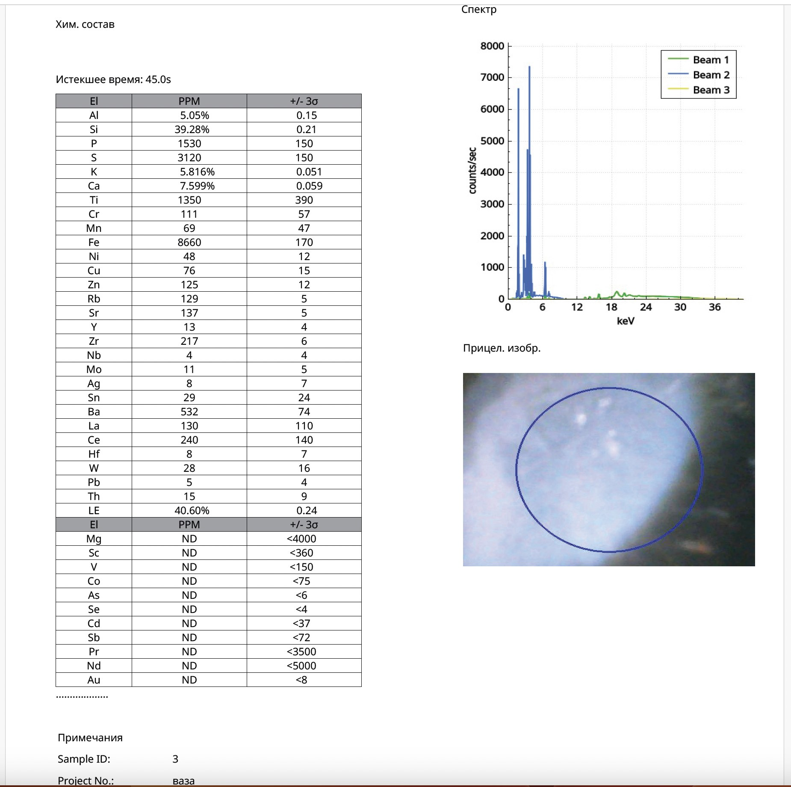
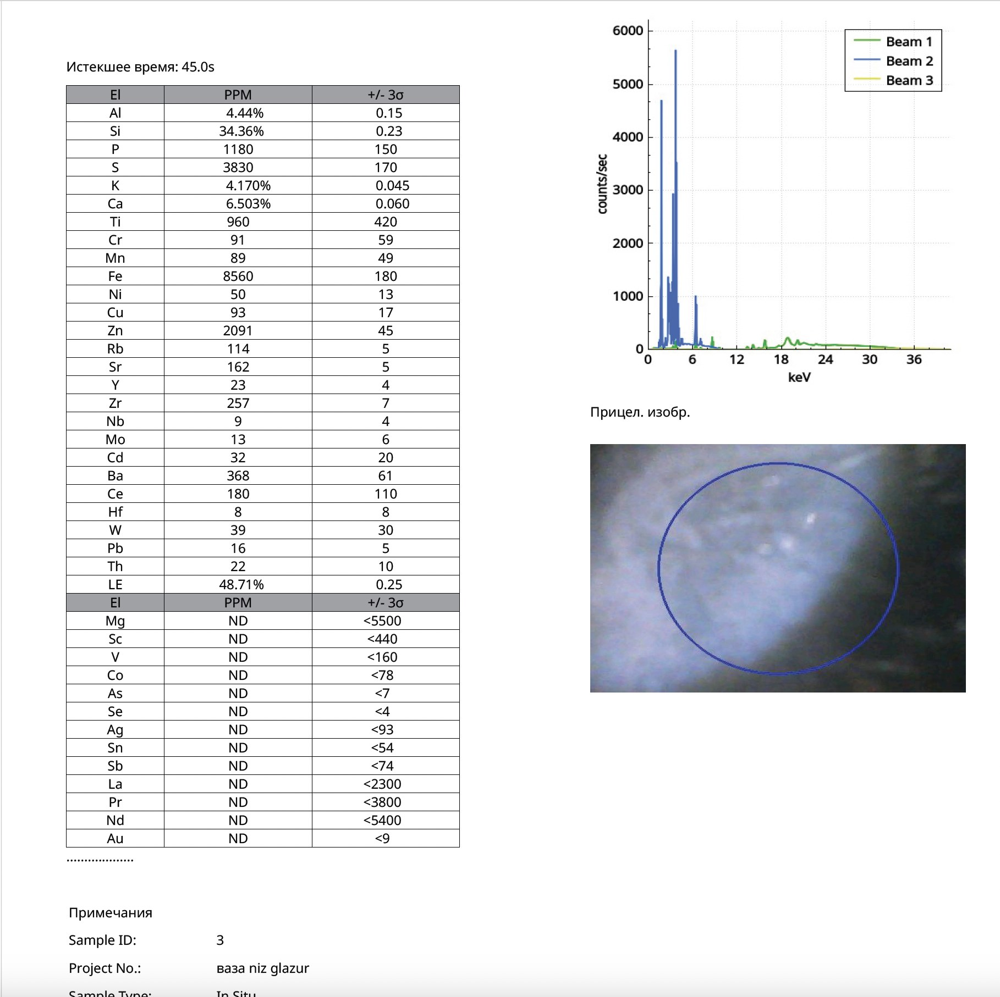
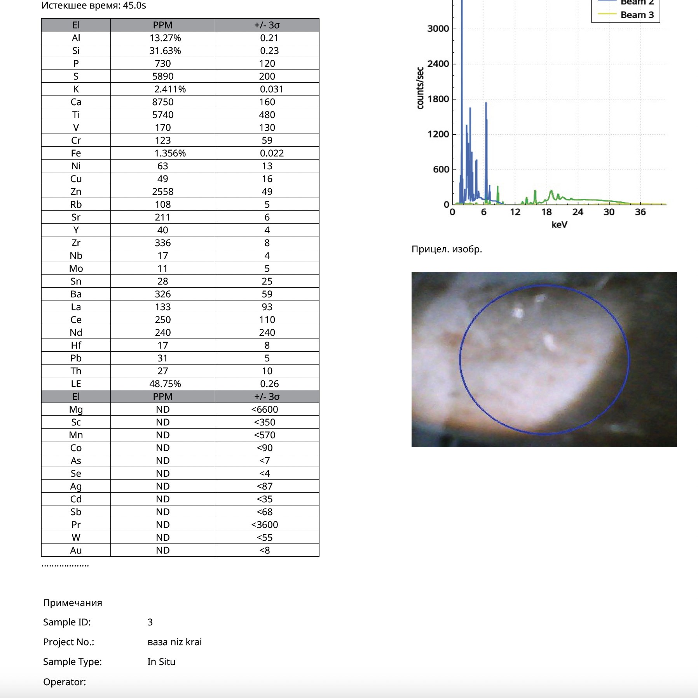

Research Article · Reference Object ro-song-002
Microscopic and X-Ray Fluorescence Investigation of a Large Grey-Blue Ru-Type Vase: Chemical Comparisons with Northern Song Ceramics from Qingliangsi and Related Kiln Sites
Professor Nona Dronova · pXRF examination 28 October 2026 · Archaeometry, Ceramic Technology, Chinese Art History, Materials Science
Abstract
This paper presents a non-destructive examination of a large grey-blue glazed ceramic vase investigated within the technological and artistic tradition of Ru ware (汝窑), historically associated with the Northern Song dynasty (960–1127 CE).
The investigation combines microscopic and visual examination of the glaze surface, crackle network, optical characteristics, foot-ring construction, and apparent firing-related features with portable X-ray fluorescence (pXRF) analysis performed on 28 October 2026 using an Olympus analyser.
Three locations were examined: the glazed surface at the widest part of the body, the glazed underside, and an exposed ceramic-body area on the foot ring. The resulting elemental dataset provides information on major constituents and trace elements, including Si, Al, K, Ca, Fe, Ti, Mn, Zn, Rb, Sr, Y, Zr, Nb, Ba, Ce, La, Th, and Cr.
The glaze exhibits a calcium-bearing silicate composition, with measured Ca concentrations of 6.503–7.599 wt.% and Fe concentrations of 0.856–0.866 wt.%. The ceramic body contains 13.270 wt.% Al, 1.356 wt.% Fe, and 5,740 ppm Ti.
Comparisons are made with published archaeological and museum investigations of Ru ware from Qingliangsi (清凉寺), celadon from Zhanggongxiang (张公巷), and related Song-period ceramic traditions. Particular attention is given to the research of Li Weidong and colleagues, Zhao Weijuan and colleagues, Wu Zhanjun and colleagues, and researchers associated with the Palace Museum and the British Museum.
The investigated vase exhibits several chemical and technological characteristics comparable to Northern Chinese celadon traditions, including archaeological Northern Song Ru ware. However, differences in potassium, manganese, strontium, and certain trace-element relationships distinguish the object from some published reference groups.
The paper also addresses an important methodological issue: archaeological kiln-site assemblages may contain manufacturing rejects, experimental pieces, firing failures, and fragments of originally successful vessels, whereas a complete, carefully finished vase provides access to a different range of technological evidence.
The results support continued investigation of the vase within the context of Northern Song Ru-type ceramic technology while identifying specific questions requiring further analytical verification.
Keywords: Ru ware; Ru yao; Northern Song dynasty; Qingliangsi kiln; Zhanggongxiang kiln; grey-blue glaze; crackle; portable XRF; ceramic body; trace elements; provenance; archaeometry; anorthite; phase separation.
1. Introduction
Ru ware occupies a distinctive position in the history of Chinese ceramics. Its reputation rests upon the exceptional refinement of its glaze, the subtlety of its blue-green and grey-blue colouration, and its association with the courtly ceramic culture of the late Northern Song dynasty.
Archaeological investigations at Qingliangsi, Baofeng County, Henan Province, have substantially expanded knowledge of Ru ceramic production. Excavations have revealed kiln structures, production debris, ceramic fragments, and technological evidence relevant to the manufacture of high-quality celadons.
Scientific investigation has further demonstrated that the characteristic appearance of Ru glazes cannot be explained by chemical composition alone. Colour and translucency are influenced by iron chemistry, firing conditions, microcrystalline phases, gas inclusions, and structural heterogeneity within the glaze.
The study by Li Weidong and colleagues (2005) was particularly important in establishing the relevance of crystalline phases and phase separation to the appearance of Northern Song Ru glaze.
Subsequent investigations using particle-induced X-ray emission (PIXE), neutron activation analysis (NAA), energy-dispersive X-ray fluorescence (EDXRF), electron microscopy, and other analytical methods have examined the relationships among Qingliangsi, Zhanggongxiang, and other Chinese ceramic production centres.
These investigations provide a substantial scientific framework for examining individual objects.
Nevertheless, comparison is complicated by differences in analytical methodology, sample preparation, instrument calibration, the archaeological contexts of reference materials, and the distinction between complete vessels and excavated fragments.
The present study examines a large grey-blue vase exhibiting a visually complex glaze, a developed crackle network, and a carefully formed foot ring.
The principal objective is to document its elemental characteristics and compare them with published data relating to Northern Chinese celadon manufacture, especially the Ru ware tradition of the Northern Song dynasty.
A further objective is to consider whether archaeological production assemblages adequately represent the technological range of carefully finished, successfully fired vessels.
2. Description of the Investigated Vase
2.1. General characteristics
The object is a large ceramic vase with a rounded body, a developed neck, an outward-flaring mouth, and a circular supporting foot.
The exterior is covered with a soft grey-blue glaze possessing considerable visual depth.
The glaze extends across the principal body surfaces and is also present on the recessed central area of the underside. The foot ring includes exposed ceramic-body surfaces.
The surface displays a network of fine intersecting glaze cracks, commonly described as crackle.
The grey-blue colour varies subtly with viewing conditions and surface curvature.
In certain areas, the glaze appears relatively translucent, whereas elsewhere it exhibits a more diffuse, jade-like optical character.
The underside includes localised darker reddish marks, including apparently paired features. These are relevant to the technological examination of the object but cannot be assigned to a specific firing-support system without further documentation.
2.2. Significance of the complete form
Unlike isolated archaeological sherds, the vase survives as a complete vessel.
This permits examination of the relationship between its overall shape, glaze distribution, crackle development, supporting structure, and exposed ceramic body.
The complete form also allows analytical measurements to be made at several positions belonging to the same object.
Such information is valuable for investigating technological consistency and possible variation between different areas of the glaze.
The survival of a complete vessel does not, by itself, establish its date or kiln of manufacture. Its significance lies in the broader range of technological information available for examination.
2.3. Provenance and storage history
According to the owner’s records, the vase has been in a private collection in the United States since 1930, where it was kept in storage together with other valuable and rare vases.
The vase was never excavated and has no burial history. It is therefore a handed-down (non-excavated) object, and all surface changes observed on it developed in air, not in soil.
For a long period the vase stood on an old vulcanised-rubber stand. This storage history is directly relevant to the interpretation of the zinc and sulfur measured on the base (Section 5.7).
3. Microscopic and Visual Examination
3.1. Research approach
The microscopic examination conducted by Professor Nona Dronova forms the initial stage of the investigation.
The principal subjects of observation are the glaze surface, its optical character, the crackle network, localised surface features, and the relationship between the glazed and unglazed areas of the vessel.
The present manuscript records the principal morphological observations associated with the examination.
Instrument model, magnification, illumination conditions, image scales, and the precise dimensions of microscopic features should be supplied from the original examination records before final publication.
3.2. Optical properties of the glaze
The glaze possesses a soft grey-blue colour and an apparent optical depth that differs from a simple opaque surface coating.
Its appearance is consistent with the broad category of complex silicate glazes in which light transmission and scattering may be influenced by several interacting factors.
These include the chemical state of iron, microscopic bubbles, crystalline inclusions, and heterogeneity within the glassy matrix.
Previous research on excavated Ru ware has demonstrated the importance of anorthite crystallisation and phase-separated structures in the optical behaviour of certain historical glazes.
The appearance of the investigated vase is compatible with the possibility of comparable structural mechanisms.
However, the presence of anorthite or any particular phase-separated microstructure in this specific object has not been independently established by the available XRF measurements.
Such identification would require appropriate structural or spectroscopic examination.
3.3. Crackle morphology
The glaze displays a developed network of intersecting cracks.
The lines vary in orientation and form irregular polygonal and curvilinear patterns.
Crackle formation in ceramic glazes is commonly associated with stress generated by differences in thermal expansion between the glaze and ceramic body.
Additional factors may include glaze thickness, cooling history, mechanical relaxation, and subsequent environmental exposure.
The crackle network is therefore a technologically relevant feature.
Nevertheless, crackle alone is not diagnostic of a particular historical period, since comparable structures can occur in ceramics of different dates and manufacturing traditions.
Further microscopic documentation should establish the widths, intersections, distribution, and possible secondary deposits associated with the cracks.
3.4. Foot ring and underside
The circular foot ring provides an opportunity to examine exposed ceramic material without sampling the glazed surface.
The relationship between the foot, the recessed glazed underside, and localised contact marks is relevant to reconstructing the manufacturing and firing processes.
The relatively large dimensions of the vase are also important.
A large ceramic vessel imposes different mechanical and thermal demands from those of small dishes or bowls.
Consequently, comparisons of firing supports and foot construction should take account of vessel dimensions, weight, and geometry.
The observed reddish marks warrant further microscopic and compositional examination before a specific technological interpretation is proposed.
4. Portable X-Ray Fluorescence Analysis
4.1. Date and measurement locations
Portable X-ray fluorescence analysis was performed on 28 October 2026 using an Olympus analyser.
The acquisition time for each measurement was 45 seconds.
Three locations were investigated:
G1: Glaze on the widest part of the vase body.
G2: Glazed area of the underside.
B1: Exposed ceramic body on the foot ring.
The instrument reported concentrations of selected elements in weight percent or parts per million.
These measurements are treated as instrumental elemental results rather than a fully normalised bulk oxide analysis.
The reported category “LE” refers to the instrument’s calculated light-element component and must not be interpreted as the concentration of an individual chemical element.
Original pXRF Protocols — Olympus analyser, 28 October 2026

Fig. 1. Olympus pXRF protocol G1 — glaze at the widest part of the vase body, 28 October 2026, 45 s acquisition. Spectrum, element table with ±3σ and aiming image. Click to open full size.

Fig. 2. Olympus pXRF protocol G2 — glazed area of the underside, 28 October 2026, 45 s acquisition. Click to open full size.

Fig. 3. Olympus pXRF protocol B1 — exposed ceramic body on the foot ring, 28 October 2026, 45 s acquisition. Click to open full size.
4.2. Major elemental composition
Table 1. Reported elemental composition of the investigated vase
| Element | G1: Body glaze | G2: Underside glaze | B1: Ceramic body |
|---|---|---|---|
| Al, wt.% | 5.050 | 4.440 | 13.270 |
| Si, wt.% | 39.280 | 34.360 | 31.630 |
| K, wt.% | 5.816 | 4.170 | 2.411 |
| Ca, wt.% | 7.599 | 6.503 | 0.875 |
| Fe, wt.% | 0.866 | 0.856 | 1.356 |
| LE, wt.% | 40.60 | 48.71 | 48.75 |
The results reveal substantial differences between the glaze and ceramic body.
The glaze contains considerably more calcium and potassium, whereas the body contains more aluminium and iron.
4.3. Trace-element composition
Table 2. Trace-element measurements, ppm
| Element | G1 | G2 | B1 |
|---|---|---|---|
| Ti | 1,350 | 960 | 5,740 |
| Mn | 69 | 89 | ND |
| Zn | 125 | 2,091 | 2,558 |
| Rb | 129 | 114 | 108 |
| Sr | 137 | 162 | 211 |
| Y | 13 | 23 | 40 |
| Zr | 217 | 257 | 336 |
| Nb | 4 | 9 | 17 |
| Ba | 532 | 368 | 326 |
| P | 1,530 | 1,180 | 730 |
| S | 3,120 | 3,830 | 5,890 |
| Pb | 5 | 16 | 31 |
ND indicates that the element was not detected under the conditions of the measurement; it does not establish a zero concentration.
4.4. Additional elements detected in the ceramic body
Table 3. Additional ceramic-body measurements
| Element | B1, ppm |
|---|---|
| Ce | 250 |
| La | 133 |
| Th | 27 |
| Cr | 123 |
These elements are particularly relevant to published investigations of raw-material provenance in Northern Chinese ceramic production.
However, concentrations obtained using portable XRF should not be treated as directly interchangeable with values obtained by NAA without suitable cross-method validation.
5. Chemical Characteristics of the Glaze and Ceramic Body
5.1. Calcium-rich glaze system
The two glaze measurements contain 7.599 wt.% and 6.503 wt.% calcium.
Their mean is 7.051 wt.%.
The exposed ceramic body contains 0.875 wt.% calcium.
Accordingly, the mean measured calcium concentration in the glaze is approximately 8.1 times that of the ceramic body.
This relationship is consistent with the use of a calcium-bearing glaze over a comparatively calcium-poor ceramic substrate.
Calcium-rich silicate glazes are a significant technological category in historical Chinese celadon manufacture.
The measured calcium enrichment therefore supports a meaningful technological comparison with Ru ware and related Northern Chinese ceramics.
It does not, however, uniquely identify the Qingliangsi kiln.
5.2. Aluminium enrichment in the ceramic body
The ceramic body contains 13.270 wt.% aluminium.
The corresponding concentrations in the two glaze measurements are 5.050 wt.% and 4.440 wt.%.
The mean glaze aluminium concentration is 4.745 wt.%.
Thus, the ceramic body contains approximately 2.8 times more aluminium than the glaze.
This distinction is consistent with an aluminosilicate ceramic body covered by a compositionally different glaze.
The result is relevant to comparisons with archaeological Ru ware, whose ceramic bodies have been characterised as relatively alumina-rich.
5.3. Iron and glaze colour
The measured iron concentrations in the two glaze locations are remarkably similar:
- G1: 0.866 wt.% Fe.
- G2: 0.856 wt.% Fe.
The difference is only 0.010 percentage points.
This suggests local consistency in the reported iron concentration.
Iron is important in the colour development of many Chinese celadon glazes.
Nevertheless, the visual effect depends not only on total iron concentration but also on oxidation state, firing atmosphere, glass composition, and microstructure.
The present measurements cannot independently establish the iron oxidation state or the firing atmosphere.
5.4. Potassium and glaze fluxes
Potassium concentrations in the two glaze locations are 5.816 wt.% and 4.170 wt.%.
The difference may reflect local compositional variation, glaze thickness, surface geometry, instrumental matrix effects, or a combination of these factors.
Potassium is relevant to glaze melting behaviour and may reflect contributions from particular raw materials.
The relatively high measured potassium concentrations are among the characteristics requiring closer examination in comparisons with archaeological Ru ware.
5.5. Titanium in the ceramic body
The ceramic body contains 5,740 ppm Ti.
If all measured titanium is expressed provisionally as TiO₂, this corresponds to approximately 0.958 wt.% TiO₂.
Titanium-bearing minerals are common constituents of ceramic raw materials and may contribute useful information in provenance studies.
Published analyses of excavated Ru ceramic bodies also report titanium.
The investigated vase therefore provides a relevant basis for further comparison, although a reliable quantitative assessment requires comparable analytical procedures.
5.6. Rubidium, strontium, yttrium, and zirconium
Rb, Sr, Y, and Zr were measured in all three locations.
These elements are frequently useful in ceramic provenance studies because their relative concentrations can reflect geological differences among raw-material sources.
Table 4. Selected elemental ratios
| Ratio | G1 | G2 | B1 |
|---|---|---|---|
| Rb/Sr | 0.942 | 0.704 | 0.512 |
| Zr/Sr | 1.584 | 1.586 | 1.592 |
| Zr/Rb | 1.682 | 2.254 | 3.111 |
The Zr/Sr ratio is notably consistent across the three locations, ranging from approximately 1.584 to 1.592.
This observation is potentially interesting.
However, it must not be interpreted as proof of a common geological source.
The similarity could also be influenced by instrumental calibration, substrate contributions to the glaze measurements, or other analytical effects.
5.7. Zinc and sulfur on the base: a trace of the old rubber stand
Zinc displays the largest variation among the measured elements: 125 ppm in the body glaze (G1), 2,091 ppm in the underside glaze (G2) and 2,558 ppm on the exposed foot ring (B1).
Sulfur and lead rise in the same direction from the body to the base:
Table 3a. Zinc, sulfur and lead from the body to the base, ppm
| Element | G1 — body glaze | G2 — underside glaze | B1 — foot ring |
|---|---|---|---|
| Zn | 125 | 2,091 | 2,558 |
| S | 3,120 | 3,830 | 5,890 |
| Pb | 5 | 16 | 31 |
The zinc is located on the surface, not in the glaze recipe. If zinc were part of the glaze, it would be equally high in G1, where it is only 125 ppm. The underside glaze is thin, and portable XRF reads heavy elements through it from the body below (approximate information depths in silicate: Fe ≈ 0.3 mm, Zn ≈ 0.8 mm, Zr ≈ 3.8 mm). However, this substrate contribution cannot explain the zinc. Iron in G2 (0.856 wt.%) is the same as in G1 (0.866 wt.%), so little body signal reached the detector. Elements reading deeper than zinc (Sr, Zr, Y, Nb) show only about one third of the body value in G2, whereas zinc shows about four fifths. The excess zinc must therefore sit on or very near the surface of the base.
The zinc is not from the clay. Clays of the same Upper Carboniferous Benxi Formation in western Henan contain only about 10–111 ppm Zn, and zinc in these sequences is associated with sulfides and is easily mobilised. In a strongly reducing firing at about 1,200 °C zinc tends to be lost rather than retained. A body value of 2,558 ppm is therefore incompatible with the local raw material and must have been acquired after firing.
The sulfur is also post-firing. Sulfates decompose at the firing temperature of Ru ware, so 0.59 wt.% sulfur cannot survive in a fired body. The sulfur X-ray line is also shallow (tens of micrometres), so it reports the surface only.
Explanation: the old vulcanised-rubber stand. Vulcanised rubber of the early twentieth century contained zinc oxide (as an activator) and sulfur (as the vulcanising agent), and old rubber is known to release sulfur and to leave residues on objects resting on it. The combination of zinc and sulfur, their restriction to the base and foot ring — the areas of prolonged contact — and their maximum on the porous unglazed foot ring all correspond to this storage history (Section 2.3). Reddish granular residues visible on the bearing surface of the foot ring coincide with the B1 measurement spot and are consistent with crumbled old rubber.
The zinc and sulfur are therefore interpreted as a modern storage contamination, not as a property of the vase’s body or glaze. A paired measurement — directly on a residue patch and on a clean area of the foot ring — and a measurement after cleaning with a solvent are recommended to document this conclusion instrumentally.
6. Comparison with Archaeological Ru Ware from Qingliangsi
6.1. Reference data
Li Weidong and colleagues investigated archaeological Ru ware from Qingliangsi using a combination of chemical and microstructural methods.
Their research demonstrated the importance of crystalline phases and phase-separated structures in the formation of characteristic Ru glaze appearances. Their published ceramic-body analyses included SiO₂ concentrations of approximately 62.48–65.95 wt.% and Al₂O₃ concentrations of approximately 25.91–28.95 wt.%.
The most comprehensive single reference dataset is the comparative study by Ding Yinzhong, Li He, Sun Xinmin, Wang Guangyao, Chen Tiemei and Miao Jianmin (Palace Museum Journal, 2013). It reports the bodies and glazes of 35 excavated Qingliangsi samples in four groups: official Ru ware type I (汝官Ⅰ), official Ru ware type II (汝官Ⅱ, regarded by the authors as a transitional stage), Northern Song popular Ru celadon (民汝), and Jin–Yuan popular Ru celadon.
The authors conclude that official Ru bodies were made from essentially the same raw materials as Northern Song popular Ru, and that the difference lay in more thorough processing — finer grinding, levigation and wedging — reflected in fine, evenly distributed quartz grains.
To provide a comparison, the elemental concentrations obtained for the investigated vase have been converted into provisional oxide equivalents. Such calculations are useful for orientation but must not be confused with a calibrated, normalised oxide analysis.
6.2. Ceramic body
Table 5. Ceramic body of the investigated vase compared with Qingliangsi bodies (Ding et al. 2013), wt.%, mean (range)
| Oxide | Vase, B1* | Official Ru (n = 15) | Popular Ru, Northern Song (n = 10) | Popular Ru, Jin–Yuan (n = 10) |
|---|---|---|---|---|
| Al₂O₃ | 25.07 | 26.51 (24.97–28.66) | 25.33 (23.12–26.97) | 22.92 (16.83–27.34) |
| SiO₂ | 67.67 | 65.61 (63.03–67.47) | 66.99 (65.30–69.76) | 68.01 (63.52–73.78) |
| K₂O | 2.90 | 1.71 (1.47–1.99) | 1.52 (1.35–1.77) | 2.09 (1.47–2.90) |
| CaO | 1.22 | 0.96 (0.39–2.40) | 0.96 (0.43–2.00) | 1.20 (0.74–1.79) |
| TiO₂ | 0.96 | 0.76 (0.63–0.92) | 0.88 (0.71–1.12) | 0.76 (0.61–1.00) |
| Fe₂O₃ | 1.94 | 2.29 (2.07–2.51) | 2.18 (1.72–2.52) | 2.66 (2.25–3.19) |
| MnO | not detected (< 0.07) | ≈0.02 (0.01–0.03) | ≈0.02 (0.01–0.03) | ≈0.02 (0.02–0.04) |
Unnormalised oxide equivalents calculated from the pXRF elemental readings of the exposed foot ring (B1); their sum is 99.8 wt.%. Na₂O and MgO are not determined by the instrument. Reference means and ranges are calculated from the individual analyses in Ding et al. (2013), Table 1. The detection limit for Mn in B1 (570 ppm) is too high for a meaningful comparison with the reference MnO values.
The Al₂O₃ and CaO equivalents of the vase lie within the range of official Ru bodies.
The SiO₂ and TiO₂ equivalents lie slightly above the official range, and the Fe₂O₃ equivalent slightly below it; all three fall within the range of Northern Song popular Ru bodies.
The clearest deviation is potassium. The provisional K₂O equivalent of 2.90 wt.% exceeds every official and Northern Song popular Ru body in the reference set and reaches only the upper limit of the Jin–Yuan group.
6.3. Glaze
Table 5a. Minor glaze constituents of the investigated vase compared with Qingliangsi glazes (Ding et al. 2013), wt.%, mean (range)
| Oxide | Vase G1* | Vase G2* | Official Ru I (n = 10) | Official Ru II (n = 5) | Popular Ru, Northern Song (n = 10) | Popular Ru, Jin–Yuan (n = 10) |
|---|---|---|---|---|---|---|
| K₂O | 7.01 | 5.02 | 4.11 (3.48–4.81) | 3.38 (2.90–3.76) | 4.27 (3.40–4.60) | 3.73 (3.24–4.52) |
| CaO | 10.63 | 9.10 | 12.21 (11.45–13.34) | 10.70 (10.10–11.31) | 6.97 (3.88–11.40) | 7.98 (5.19–10.54) |
| TiO₂ | 0.23 | 0.16 | 0.13 (0.10–0.22) | 0.15 (0.13–0.17) | 0.11 (0.08–0.13) | 0.17 (0.10–0.28) |
| MnO | 0.009 | 0.011 | 0.12 (0.08–0.21) | 0.13 (0.11–0.15) | 0.07 (0.05–0.09) | 0.09 (0.05–0.13) |
| Fe₂O₃ | 1.24 | 1.22 | 2.01 (1.72–2.58) | 1.55 (1.39–1.65) | 1.49 (0.97–2.21) | 2.00 (1.20–3.67) |
Unnormalised oxide equivalents from the pXRF readings. Major glaze components (SiO₂, Al₂O₃) are not compared: on curved glaze surfaces without helium purge, portable XRF determines the light elements less reliably (the unnormalised oxide sum for G1 is 112.7 wt.%), and their information depth is only a few tens of micrometres. Reference means and ranges are calculated from Ding et al. (2013), Table 2.
The CaO equivalents of the vase glaze (10.63 and 9.10 wt.%) fall within the range of the Northern Song popular Ru glazes and close to official Ru type II.
The TiO₂ equivalents lie within or at the upper limit of the official ranges.
The Fe₂O₃ equivalents (1.24 and 1.22 wt.%) lie below the official Ru ranges and within the range of Northern Song popular Ru.
The K₂O equivalents (7.01 and 5.02 wt.%) exceed all four reference groups.
6.4. Manganese in the glaze
Manganese was detected in both glaze measurements: 69 ppm (G1) and 89 ppm (G2), with 3σ uncertainties of 47 and 49 ppm. Expressed as oxide, this corresponds to approximately 0.009–0.011 wt.% MnO.
The Qingliangsi glazes contain 0.08–0.21 wt.% MnO in the official groups and 0.05–0.13 wt.% in the popular groups.
Even at the upper limit of the measurement uncertainty (approximately 0.015–0.018 wt.% MnO), the vase glaze lies several times below the lowest value in the reference set.
Manganese is one of the elements found useful for distinguishing Ru ware from other celadon traditions in the British Museum study (Section 11). The low manganese content is therefore a significant observation.
Possible explanations include a different glaze raw material (for example, a low-manganese calcareous component or plant ash), differences in calibration between portable XRF and the laboratory XRF used for the reference data, or a combination of both.
This observation requires verification by repeated calibrated measurements and, ideally, by an independent laboratory method before any interpretation is attempted.
6.5. A body prepared for a large vessel
The comparison with Qingliangsi bodies must take into account a key finding of Ding et al. (2013): official Ru bodies were made from the same raw materials as Northern Song popular Ru, and the difference lay in the processing — finer grinding, more thorough levigation (settling in water) and wedging. The chemical ranges of the official and popular groups therefore overlap almost completely, and a value near the edge of one range does not indicate the status of an object. Moreover, the official reference group comprises only 15 sherds, mostly of small forms such as dishes, bowls and brush washers.
The local clay. Geological studies of the Qingliangsi area describe a single Upper Carboniferous sequence (Benxi Formation) containing a hematite iron layer, a bauxite layer and an upper mudstone hosting ceramic clay. Such high-alumina clays are enriched in immobile elements. The body of the vase matches clays of this formation in western Henan:
Table 5b. Immobile trace elements of the vase body compared with Benxi Formation clays (Poci, western Henan), ppm
| Element | Vase body, B1 | Benxi Formation clays |
|---|---|---|
| Cr | 123 | 94–152 |
| V | 170 | 64–328 |
| Zr | 336 | 136–496 |
| Ce | 250 | 154–282 |
| La | 133 | 66–126 |
| Y | 40 | 20–94 |
| Th | 27 | 39–64 |
| Nb | 17 | 19–64 |
Portable XRF determines Ce, La and V with large uncertainties (about ±90–130 ppm).
This geochemical fingerprint identifies the body as a northern high-alumina clay of the Ru kiln region. Together with the high TiO₂ (0.96 wt.%) and Al₂O₃ (25 wt.%), it also excludes the porcelain bodies of Jingdezhen, which are low in titanium, and therefore excludes Qing-dynasty Jingdezhen imitations of Ru glaze.
The signature of a refined, plastic body. The deviations of the vase body from the official Ru mean are not random; they point in a consistent direction:
Table 5c. Body ratios indicating raw-material preparation
| Official Ru, mean | Vase body | Direction | |
|---|---|---|---|
| Fe₂O₃, wt.% | 2.29 | 1.94 | lower |
| TiO₂, wt.% | 0.76 | 0.96 | higher |
| Fe₂O₃ / TiO₂ | ≈3.0 | ≈2.0 | markedly lower |
| K₂O, wt.% | 1.71 | 2.90 | higher |
This pattern is interpreted as the result of especially thorough preparation of the body for a large vessel:
- Lower iron. In the Benxi Formation clays iron occurs partly as relatively coarse hematite or siderite grains and concretions. During levigation, coarse heavy grains settle and are removed, lowering the iron content.
- Higher titanium. In high-alumina clays titanium is carried mainly by very fine anatase particles, which concentrate in the fine fraction. Retaining the finest fraction raises the relative titanium content.
- Higher potassium. The fine, plastic fraction is richer in illite and mica. A large vase requires a body with high plasticity and green strength, so that the form can be thrown, trimmed and dried without cracking and can carry its own weight in the kiln.
The same features are visible on the foot ring: dense, fine trimming marks with sharp edges and no coarse grains. Microscopic measurement of quartz grain size and of iron-rich inclusions on the foot ring, compared with the fine, evenly distributed quartz described by Ding et al. (2013) for official Ru bodies, would provide a direct test of this interpretation.
6.6. Low manganese and the sky-blue colour
The sky-blue (天青) colour of Ru glaze is produced by ferrous iron (Fe²⁺) formed in a reducing firing; ferric iron (Fe³⁺) gives yellowish to brownish tones. Manganese acts as an oxidising agent in glass: it converts Fe²⁺ into Fe³⁺ and has been used for centuries as a glass decolouriser for exactly this reason, and in excess it adds greyish or violet tones. In a celadon glaze, manganese is therefore an enemy of the clear sky-blue colour.
Ding et al. (2020) show that the glazes of the official kilns (Ru, and the Southern Song official kilns that inherited the Ru method) are characterised by low TiO₂ and MnO, which they connect with the stable sky-blue colour. The official potters moved away from the traditional plant-ash recipe towards potassium-rich feldspar or weathered porcelain stone combined with limestone. Plant ash is the principal carrier of manganese in traditional glazes, and feldspar is a principal carrier of potassium.
The glaze of the vase follows this official recipe in an extreme form: very low manganese (MnO ≈ 0.01 wt.%) and high potassium (K₂O equivalents 5.0–7.0 wt.%). The two features are not separate anomalies but the consequence of one technological choice — a glaze built on feldspathic material and limestone, with little or no ash. The result is the clear sky-blue colour of the vase.
This direction is also confirmed by complete museum vessels. In the British Museum study of ten intact Ru vessels from the Sir Percival David collection, Ru ware had significantly lower manganese and strontium and higher potassium than Korean Goryeo celadon, and the manganese content of the Ru group was remarkably uniform. The vase shows the same pattern: low Mn, low Sr, high K.
A selection hypothesis. Among sherds excavated at Qingliangsi, only a minority show the true sky-blue colour; many are whitish or pale. If low manganese favours the sky-blue colour, the successful sky-blue products would be expected to contain less manganese than the average kiln-site sherd. A large, flawless sky-blue vase that passed the selection of the official workshop would then represent the low-manganese end of production. This hypothesis connects the glaze chemistry directly with the methodological argument of Section 12 and can be tested by comparing manganese in sky-blue and off-colour sherds.
The absolute manganese level of the vase, several times lower than in the reference glazes, should be confirmed by a calibrated laboratory measurement.
6.7. Summary of the comparison
The vase shares the fundamental technological profile of Qingliangsi ceramics: a high-alumina, calcium-poor body of the local Benxi Formation clay under a calcium-bearing lime glaze.
Its deviations from the average of the excavated sherds form a consistent picture rather than a set of contradictions: a body especially refined and made plastic for a large vessel (lower iron, higher titanium and potassium), and a glaze following the official low-manganese, high-potassium recipe in an extreme form, which accounts for its clear sky-blue colour.
The zinc and sulfur on the base are explained by the storage history of the vase on an old rubber stand and are not a property of the ceramic.
7. Comparison with PIXE Studies of Qingliangsi and Zhanggongxiang
7.1. Research by Zhao Weijuan and colleagues
Zhao Weijuan and colleagues investigated the chemical composition of ceramic bodies from Qingliangsi and Zhanggongxiang using particle-induced X-ray emission.
Their research addressed the provenance of raw materials used by these Northern Chinese ceramic production centres.
The published dataset includes individual archaeological samples, providing a more informative basis for comparison than general descriptions of glaze colour or ceramic appearance.
Selected reported compositions are presented below.
Table 6. Comparison with individual archaeological ceramic-body analyses
| Sample | Al₂O₃, wt.% | SiO₂, wt.% | K₂O, wt.% | TiO₂, wt.% | Fe₂O₃, wt.% |
|---|---|---|---|---|---|
| Investigated vase* | 25.07 | 67.67 | 2.90 | 0.958 | 1.94 |
| R39B | 27.91 | 64.98 | 1.68 | 1.08 | 1.77 |
| R40B | 27.56 | 65.74 | 1.77 | 1.15 | 1.73 |
| R41B | 26.21 | 66.06 | 2.18 | 1.08 | 2.24 |
| R42B | 28.03 | 65.25 | 1.73 | 1.28 | 1.81 |
| R44B | 26.86 | 65.77 | 1.90 | 1.13 | 2.39 |
The vase values are calculated oxide equivalents derived from portable XRF elemental readings, not PIXE results.
The investigated vase exhibits broad compositional proximity to these archaeological samples in several components.
Its provisional aluminium and titanium oxide equivalents are near the lower part of the illustrated ranges, while its iron oxide equivalent overlaps the values reported for the selected archaeological specimens.
The most notable difference is potassium.
The provisional K₂O equivalent for the vase is 2.90 wt.%, exceeding the values of the illustrated samples.
This difference should not be dismissed.
It may reflect raw-material variation, analytical differences, or another technological factor requiring investigation.
8. Comparison with Palace Museum Ceramic Studies
8.1. Significance of museum-based research
Research undertaken by the Palace Museum in Beijing has contributed substantially to the chemical classification of Song-period official ceramics and later imitations.
These investigations are particularly important because they extend comparative analysis beyond excavated kiln-site fragments to include museum objects.
In certain studies, the chemical composition of exposed ceramic-body surfaces was used to investigate relationships among objects attributed to different ceramic traditions.
Such work demonstrates the potential of elemental analysis to complement art-historical classification.
8.2. Comparison with a Northern Chinese museum group
A Palace Museum study published in 2014 identified a group of seven ceramic objects with Northern Chinese compositional characteristics.
Selected trace-element values for their ceramic bodies are compared with those of the investigated vase.
Table 7. Ceramic-body trace-element comparison, ppm
| Sample | Rb | Sr | Y | Zr |
|---|---|---|---|---|
| Investigated vase | 108 | 211 | 40 | 336 |
| G2 | 78 | 118 | 59 | 285 |
| G4 | 81 | 135 | 30 | 241 |
| G5 | 76 | 115 | 43 | 266 |
| G6 | 66 | 99 | 42 | 246 |
| G7 | 66 | 107 | 45 | 252 |
| G8 | 63 | 109 | 48 | 264 |
| G9 | 80 | 130 | 65 | 389 |
The museum figures have been transcribed or converted from previously examined comparative data. Their original units and table entries require final verification against the primary publication.
The investigated vase falls within the illustrated museum range for Y and Zr.
Its Rb and Sr concentrations, however, exceed those of the seven illustrated museum objects.
The results therefore demonstrate partial overlap rather than complete agreement.
This is an important distinction.
A scientifically meaningful comparison must account for both similarities and differences.
9. Comparative Trace Elements in Archaeological Glazes
A separate Palace Museum publication provides comparative information on glaze trace elements from several historical ceramic production centres.
The available values permit a preliminary examination of Rb, Sr, Y, and Zr.
Table 8. Preliminary comparison of glaze trace elements, ppm
| Sample or group | Rb | Sr | Y | Zr |
|---|---|---|---|---|
| Investigated vase, G1 | 129 | 137 | 13 | 217 |
| Investigated vase, G2 | 114 | 162 | 23 | 257 |
| Qingliangsi, reported mean | 119 | 261 | 26 | 195 |
| Zhanggongxiang, reported mean | 108 | 299 | 29 | 210 |
| Laohudong, Yuan-period layer | 198 | 270 | 15 | 99 |
| Jiaotanxia | 140 | 635 | 39 | 171 |
The comparative reference values and their units must be checked against the original published table before this table is treated as a final quantitative dataset.
The Rb concentrations of the investigated vase are relatively close to those reported for Qingliangsi and Zhanggongxiang.
Its Zr concentrations are also broadly comparable.
However, the measured Sr concentrations are considerably lower than the cited archaeological means.
Y also differs, particularly in the G1 measurement.
The results suggest some shared geochemical characteristics but do not establish a unique provenance.
They also highlight the importance of comparing data obtained through compatible analytical procedures.
10. Neutron Activation Studies of Raw-Material Provenance
10.1. Research by Wu Zhanjun and colleagues
The 2007 study by Wu Zhanjun and colleagues investigated the raw-material characteristics of ceramic bodies from Qingliangsi and Zhanggongxiang using neutron activation analysis.
The study examined 83 specimens, including:
- 32 official Ru ware ceramic-body samples;
- 5 popular Ru ware samples;
- 32 Zhanggongxiang ceramic-body samples;
- 14 geological samples.
Twenty-three elements were determined.
The authors identified Fe, Ce, Ba, Ta, Th, La, Sm, and Cr as particularly informative elements for distinguishing the investigated raw-material groups.
This finding is relevant to the present study because six of these eight elements were reported in the Olympus analysis of the vase.
Table 9. Elements relevant to published NAA provenance studies
| Element | Investigated vase, ceramic body |
|---|---|
| Fe | 13,560 ppm |
| Ce | 250 ppm |
| Ba | 326 ppm |
| Th | 27 ppm |
| La | 133 ppm |
| Cr | 123 ppm |
| Ta | Not reported |
| Sm | Not reported |
The availability of these measurements creates an opportunity for future multivariate comparison.
However, the individual NAA concentrations for the archaeological specimens have not yet been recovered in a form suitable for independent verification.
Consequently, the present paper does not claim that the vase has been statistically assigned to the Qingliangsi or Zhanggongxiang groups.
Furthermore, the reliability of portable XRF determinations of Ce, La, and Th should be evaluated with particular care because of possible spectral interference and matrix effects.
10.2. Research by Li Rongwu and colleagues
Li Rongwu and colleagues investigated the raw-material origins of ceramics from the Jiaotanxia official kiln and Qingliangsi Ru kiln using neutron activation analysis.
Their work is relevant because it extends chemical comparison across different official ceramic traditions.
The original publication has been identified bibliographically, but its complete individual elemental tables have not yet been independently extracted for the present study.
Accordingly, it is cited as an important research source rather than used as the basis for unsupported numerical comparisons.
11. Comparison with British Museum Research
The British Museum study Characterising Chinese Ru ware in the Sir Percival David collection at the British Museum using handheld XRF analysis examined historical Ru ware using a non-destructive analytical approach.
The researchers compared Ru ware with Korean Goryeo celadons and demonstrated the potential value of elemental characteristics, including Mn and Sr, in distinguishing ceramic traditions.
The investigated vase contains:
- Mn: 69 and 89 ppm in the two glaze measurements;
- Sr: 137 and 162 ppm in the two glaze measurements.
These values provide a basis for future comparison.
However, the British Museum study used normalised XRF signal intensities rather than directly equivalent concentrations.
Therefore, numerical comparison with the Olympus ppm results cannot be undertaken without appropriate calibration or a compatible analytical framework.
The principal relevance of the British Museum study lies in its demonstration that non-destructive elemental analysis can contribute to the classification of museum-quality Ru ware.
12. Methodological Significance of Comparing a Complete High-Quality Vase with Archaeological Sherds
12.1. The character of archaeological reference assemblages
A central methodological issue concerns the nature of the archaeological materials used as chemical reference groups.
Many scientific investigations of Ru ware are based on fragments recovered from kiln sites.
Such material is exceptionally valuable because its archaeological context may establish a connection with a particular production centre.
Nevertheless, kiln-site assemblages do not necessarily represent the entire range of products manufactured at that location.
They may contain several categories of material:
- Vessels damaged during firing.
- Pieces rejected because of glaze defects.
- Experimental objects produced to test raw materials or firing conditions.
- Technological trials and intermediate production products.
- Fragments of vessels that were originally successful but subsequently broken.
- Ordinary production debris accumulated over extended periods.
These categories are not technologically identical.
A kiln-site assemblage may therefore contain both successful and unsuccessful products, as well as evidence of experimental practice.
It would be incorrect to regard every archaeological sherd as a failed experiment.
Equally, it would be incorrect to assume that the average composition of all excavated production material necessarily represents every category of finished vessel.
12.2. Why a complete vessel provides different evidence
The investigated grey-blue vase survives as a complete object.
Its preservation permits examination of technological relationships that may be difficult or impossible to reconstruct from isolated fragments.
These include the overall proportions of the vessel, the distribution of glaze across curved surfaces, the relationship between the body and the foot ring, and the continuity of crackle patterns.
A complete vessel also permits measurements at different positions within the same manufactured object.
In the present investigation, the two glaze measurements and the exposed-body measurement provide a limited but useful basis for examining compositional differentiation.
The vase therefore represents a different type of analytical object from an isolated kiln-site sherd.
This difference is relevant to the design of comparative studies.
It does not imply that the complete vessel is inherently older, more authentic, or chemically superior.
12.3. Technological selection and the manufacture of prestigious ceramics
The production of high-quality ceramics requires successful control of several interacting variables.
These may include the preparation of raw materials, vessel forming, glaze composition, glaze application, drying, firing atmosphere, temperature, and cooling.
In the manufacture of prestigious ceramics, visual and structural quality may have influenced which objects were retained, distributed, or selected for particular uses.
It is therefore reasonable to consider the hypothesis that successfully finished vessels could exhibit a narrower range of certain technological characteristics than a heterogeneous assemblage of all production outputs.
For example, successfully fired objects might display greater consistency in glaze thickness, surface quality, colour development, or structural integrity.
However, such a hypothesis must be tested.
It cannot be assumed that aesthetic quality necessarily corresponds to a particular trace-element composition.
Trace-element concentrations are often more closely related to geological sources than to the visible success of firing.
Consequently, the chemical composition of a high-quality finished vessel may overlap substantially with that of rejected products made from the same raw materials.
The relationship between quality selection and elemental composition is therefore an empirical question.
12.4. The special technological demands of large vessels
The size and geometry of the investigated vase are particularly important.
Large ceramic vessels present manufacturing challenges that differ from those encountered in the production of small bowls or dishes.
These challenges may include:
- maintaining dimensional stability during forming and drying;
- avoiding deformation during firing;
- controlling the distribution of glaze over a large curved surface;
- ensuring adequate support within the kiln;
- maintaining acceptable thermal gradients;
- preventing glaze defects associated with thickness and flow.
These considerations raise the possibility that large vessels required particular technological solutions.
Differences in ceramic-body preparation, glaze application, and firing support may therefore be relevant to comparisons between large vases and small archaeological objects.
However, a difference in vessel size does not, by itself, establish that different raw materials were used.
This question requires direct comparison with securely attributed large ceramic forms.
12.5. Interpreting chemical differences responsibly
The investigated vase exhibits several characteristics comparable to published Northern Chinese celadon data.
At the same time, its potassium and strontium concentrations differ from some archaeological and museum reference values.
Several explanations deserve consideration.
Raw-material variability. Materials obtained from different deposits or geological layers may possess different trace-element signatures.
Glaze recipe variation. Different production batches or technological traditions may employ different proportions of glaze components.
Differences between vessel categories. Large vessels may require particular forming and firing procedures, although compositional differences must be independently demonstrated.
Archaeological sampling effects. Kiln-site assemblages may contain a heterogeneous combination of experimental material, production failures, and successfully manufactured objects.
Analytical differences. Portable XRF, laboratory EDXRF, PIXE, and NAA do not necessarily produce directly interchangeable results.
These possibilities should be investigated rather than used as predetermined explanations.
In particular, the high quality of a finished object cannot automatically account for every chemical deviation from an archaeological reference group.
12.6. A three-part comparative framework
A more comprehensive approach should compare three categories of material.
First: securely excavated archaeological specimens.
These provide essential evidence of production centres, chronological contexts, and the composition of materials used at particular kilns.
Second: complete museum objects.
These provide information about finished forms, glaze quality, foot construction, and technological characteristics of surviving vessels.
Third: the investigated vase.
This object provides a documented combination of complete form, microscopic observations, and a three-location elemental dataset.
The strongest comparative conclusions would emerge from combining these categories rather than relying exclusively on one.
Particular value would come from analysing complete museum vessels and archaeological samples using the same instrument, calibration procedure, measurement geometry, and data-processing method.
12.7. Implications for the investigated vase
The present vase should therefore be compared not only with average chemical compositions derived from excavated kiln-site fragments, but also with carefully documented complete vessels.
Its large size, grey-blue glaze, foot-ring construction, and measured elemental characteristics justify a broader comparative programme.
The hypothesis that high-quality finished ceramics may differ in some technological respects from kiln-site production debris is scientifically testable.
It provides a reason to expand the reference dataset, not a reason to disregard chemical discrepancies.
Conclusion to Section 12
Archaeological sherds remain fundamental to the scientific study of Ru ware.
Nevertheless, kiln-site assemblages may contain manufacturing rejects, experimental products, and fragments of originally successful vessels.
A complete, carefully finished vase offers a different range of technological evidence.
For this reason, the investigation of the present object should combine archaeological chemistry with the study of complete museum ceramics and securely attributed large forms.
Chemical similarities should be treated as evidence of technological comparability, while differences should remain part of the scientific record and be investigated through additional measurements and appropriately selected reference groups.
13. Discussion
The results reveal several important characteristics of the investigated vase.
First, the glaze contains substantially more calcium than the exposed ceramic body.
This relationship is consistent with a calcium-bearing silicate glaze applied to a comparatively alumina-rich ceramic substrate.
Second, the measured iron concentrations in the two glaze locations are closely similar.
This finding is relevant to the study of glaze colour and possible compositional consistency, although it does not independently establish firing conditions.
Third, the ceramic body contains aluminium, iron, and titanium concentrations that permit meaningful comparison with published archaeological studies of Northern Chinese ceramics.
Fourth, the trace-element profile includes several elements used in provenance research, including Rb, Sr, Y, Zr, Ba, Ce, La, Th, and Cr.
Fifth, some measured characteristics overlap with published Qingliangsi and related reference datasets, while others differ.
The most significant differences from the excavated reference sherds are elevated potassium in the body and glaze, markedly lower manganese in the glaze, lower iron and higher titanium in the body, and strontium in the glaze and body. As discussed in Sections 6.5 and 6.6, these differences form a consistent technological picture: a body refined for a large vessel and a glaze following the official low-manganese recipe. The zinc on the base is explained by contact with an old rubber stand (Section 5.7).
These differences should not be concealed by selective comparison.
They are potentially informative observations.
Sixth, the optical character of the grey-blue glaze is compatible with mechanisms previously described for complex historical celadon glazes.
Nevertheless, direct evidence of specific crystalline phases and phase-separated microstructures is not yet available for this object.
Seventh, the large dimensions and complete preservation of the vase make it particularly suitable for a comparative programme involving complete museum objects and large archaeological forms.
Finally, the present study illustrates both the value and limitations of portable XRF.
The method can provide useful non-destructive elemental information, but rigorous provenance attribution requires appropriate calibration, repeated measurements, uncertainty estimates, and compatible reference data.
14. Conclusions
1. Portable XRF analysis conducted on 28 October 2026 established a three-location elemental dataset for a large grey-blue Ru-type vase, including two glaze measurements and one exposed ceramic-body measurement.
2. The glaze is characterised by a calcium-bearing silicate composition with measurable potassium, aluminium, and iron. This technological system is broadly comparable with historical Northern Chinese celadon glazes, including those associated with Northern Song Ru ware.
3. The ceramic body is comparatively aluminium-rich and calcium-poor. Its measured composition provides a basis for comparison with archaeological ceramic bodies from Qingliangsi and related production centres.
4. Iron concentrations in the two glaze locations are closely similar, at 0.866 and 0.856 wt.%, respectively.
5. The measured trace-element profile includes Rb, Sr, Y, Zr, Ba, Ti, Ce, La, Th, and Cr, several of which are relevant to published provenance studies.
6. Selected elemental characteristics show partial correspondence with published archaeological and museum reference groups associated with Northern Chinese ceramics.
7. Differences in potassium, manganese, strontium, and other elements demonstrate that the vase cannot presently be described as chemically identical to the published Qingliangsi reference datasets.
8. The grey-blue glaze, its optical depth, and its crackle morphology are compatible with characteristics observed in historical celadon traditions. The presence of specific microcrystalline or phase-separated structures remains to be confirmed by appropriate analytical methods.
9. The distinction between complete high-quality vessels and archaeological kiln-site fragments is methodologically important. Archaeological assemblages may include production failures, technological trials, and fragments of originally successful ceramics, and may not represent every category of finished production equally.
10. The investigated vase should therefore be compared with both securely excavated archaeological material and complete museum objects, particularly large forms.
11. The available evidence supports continued examination of the vase within the technological and artistic context of Northern Song Ru-type ceramics. It does not yet provide an independent, conclusive determination of the vessel’s date or kiln of manufacture.
12. Further work should prioritise repeated calibrated XRF measurements, verification of selected trace elements by an independent laboratory method, non-destructive structural analysis of the glaze, and direct comparison with securely attributed complete vessels.
13. The vase has been in a private collection in the United States since 1930 and has no burial history. The elevated zinc and sulfur on the base and foot ring are a surface contamination from long contact with an old vulcanised-rubber stand, not a property of the body or glaze.
14. The immobile trace elements of the body (Cr, V, Zr, Ce, La, Y) match the high-alumina clays of the Benxi Formation of western Henan, the formation underlying the Qingliangsi kiln area. Together with TiO₂ ≈ 0.96 wt.% this identifies a northern Ru-region body and excludes Jingdezhen porcelain bodies.
15. Lower iron, higher titanium and higher potassium in the body are interpreted as the signature of an especially well levigated, plastic body prepared for a large vessel.
16. Very low manganese together with high potassium in the glaze corresponds to the official Ru glaze recipe based on feldspathic material and limestone rather than plant ash. Because manganese oxidises Fe²⁺ to Fe³⁺, its near absence favours the clear sky-blue colour of the vase. The same low-Mn, low-Sr, high-K direction distinguishes intact Ru vessels in the British Museum.
The investigated grey-blue vase represents a valuable subject for further interdisciplinary research.
Its elemental characteristics, visual properties, and complete form offer an opportunity to examine the relationships between ceramic chemistry, glaze technology, object quality, and the archaeological interpretation of Northern Chinese celadon production.
15. References
Li, W., Li, J., Deng, Z., Wu, J., and Guo, J. (2005). Study on Ru ware glaze of the Northern Song dynasty: One of the earliest crystalline-phase separated glazes in ancient China. Ceramics International, 31(3), 487–494. https://doi.org/10.1016/j.ceramint.2004.07.002
Wu, B., et al. (2022). Study on the colouring, microstructure, and glaze formula of ‘Ru-type ware’ excavated from Qingliang Temple kiln in Henan Province, China. Archaeometry, 64(3), 632–643. https://doi.org/10.1111/arcm.12731
Zhao Weijuan et al. (2006). 从化学组成研究张公巷窑与清凉寺窑青瓷胎的原料产地 [Investigation of the raw-material provenance of ceramic bodies from Zhanggongxiang and Qingliangsi kilns through chemical composition]. Atomic Energy Science and Technology, 40(1), 106–110. https://doi.org/10.7538/yzk.2006.40.01.0106
Wu Zhanjun et al. (2007). 用NAA研究清凉寺窑和张公巷窑青瓷胎的原料特征及来源 [Investigation of the characteristics and sources of raw materials of ceramic bodies from Qingliangsi and Zhanggongxiang kilns using neutron activation analysis]. Nuclear Physics Review, 24(4), 284–288. https://doi.org/10.11804/NuclPhysRev.24.04.284
Li Rongwu et al. (2004). 用中子活化分析研究郊坛下官窑与清凉寺汝窑的原料来源 [Neutron activation investigation of the raw-material sources of Jiaotanxia official ware and Qingliangsi Ru ware]. Nuclear Techniques, 27(8), 576–580.
Characterising Chinese Ru ware in the Sir Percival David collection at the British Museum using handheld XRF analysis. (2023). Advances in Archaeomaterials. https://www.sciencedirect.com/science/article/pii/S266713602300002X
Palace Museum research on Song official ware and later imitations using EDXRF. (2014). Palace Museum Journal. Original Chinese publication: https://www.dpm.org.cn/Uploads/File/2018/06/04/u5b1530768e4c1.pdf
Palace Museum comparative research on Ge ware and archaeological ceramic glaze compositions. (2018). Original Chinese publication: https://www.dpm.org.cn/Uploads/File/2018/12/11/u5c0f2a8559ffc.pdf
Ding Yinzhong, Li He, Sun Xinmin, Wang Guangyao, Chen Tiemei, and Miao Jianmin (2013). 清凉寺窑出土汝官瓷与民汝青瓷胎釉配方及工艺的对比研究 [Comparative study of the body and glaze recipes and technology of official Ru ware and popular Ru celadon excavated from the Qingliangsi kiln]. Palace Museum Journal, 2013(3), 62–73. Original Chinese publication: https://www.dpm.org.cn/Uploads/File/2018/06/05/u5b165f0de3b3f.pdf
Corrosion Research on Ru Porcelain Glazes Excavated at Qingliangsi, Baofeng, China. (2023). Coatings, 13(6), 1011.
Ding Yinzhong, Li He, Wang Guangyao, Sun Xinmin, Tang Junjie, and Shen Qionghua (2020). 试论汝官窑青瓷制釉技术的南传与发展 [On the southward transmission and development of the glaze technology of official Ru celadon]. Palace Museum Journal, 2020(4). https://www.dpm.org.cn/Uploads/File/2020/04/26/u5ea50570dcfaf.pdf
Mineralogical and geochemical features of karst bauxites from Poci (western Henan, China), implications for parental affinity and bauxitization. (2019). Ore Geology Reviews. https://www.sciencedirect.com/science/article/abs/pii/S0169136818307005
Ji Qinghai, Wang Chunsong, Wang Hong, Liu Chuanquan, and Cheng Xingguo. Geological characteristics and genesis of the Qingliangsi iron deposit, Baofeng County, Henan. https://xbdz.net.cn/cn/article/pdf/preview/20130309.pdf
Depth of analysis in portable XRF. pXRF.org. https://www.pxrf.org/Concepts/DepthOfAnalysis/index.html
Bibliographic verification note: The author lists, publication metadata, and numerical transcriptions for several Chinese-language and museum studies should be checked against the original publications before release of the final version of record.
16. Supplementary Materials
The following supplementary files are recommended for deposit alongside the article:
Supplementary File S1. Overall photographs of the investigated vase, including frontal and lateral views.
Supplementary File S2. Detailed photographs of the mouth, neck, body, foot ring, and underside.
Supplementary File S3. Microscopic images of the grey-blue glaze, crackle network, and localised surface features, with scale bars and instrumental information.
Supplementary File S4. Original Olympus XRF report for G1: glaze at the widest part of the vase body, 28 October 2026.
Supplementary File S5. Original Olympus XRF report for G2: underside glaze, 28 October 2026.
Supplementary File S6. Original Olympus XRF report for B1: exposed ceramic body, 28 October 2026.
Supplementary File S7. Machine-readable elemental dataset containing all reported measurements, units, detection limits, and uncertainties where available.
Supplementary File S8. Comparative archaeological and museum reference dataset, with source publications, table numbers, original measurement units, and any conversion procedures.
17. Statements and Research Transparency
Analytical limitations
Portable XRF measurements are sensitive to surface geometry, glaze thickness, sample heterogeneity, instrument calibration, and the contribution of underlying materials.
The values reported in this paper represent measurements of specific surface locations and should not automatically be interpreted as bulk compositions.
Provisional oxide equivalents are identified separately from directly reported elemental concentrations.
Data availability
The primary analytical data consist of three Olympus XRF measurement reports dated 28 October 2026.
The complete original reports should be deposited with the publication to permit independent examination.
Research attribution
Microscopic observations and their authorship should be confirmed against the original examination records.
The final author-approved manuscript should identify the responsible researcher, analytical operator, and any additional contributors according to their actual roles.
Declaration concerning attribution
The vase is investigated within the technological and artistic tradition of Ru ware associated with the Northern Song dynasty.
Chemical and microscopic comparability is treated as evidence relevant to attribution, not as independent proof of chronological origin.